# Visual Studio 2010 创建的 WCF（.dll） 服务 第一个应用
原文转载自：http://www.cnblogs.com/finehappy/archive/2009/12/20/1628385.html
在这个例子中我们将使用 VS 2010 U 创建一个 WCF 服务，其中会了解
[DataContract] [ServiceContract] 等特性。
内置的 WCFSVCHost ，并使用“WCF 测试客户端”来测试我们创建的服务。
注意下面的所有类、接口及方法都添加了 public 的访问级别。
# 一，建立一个 WCF 服务库
创建一个 WCF 服务库项目，
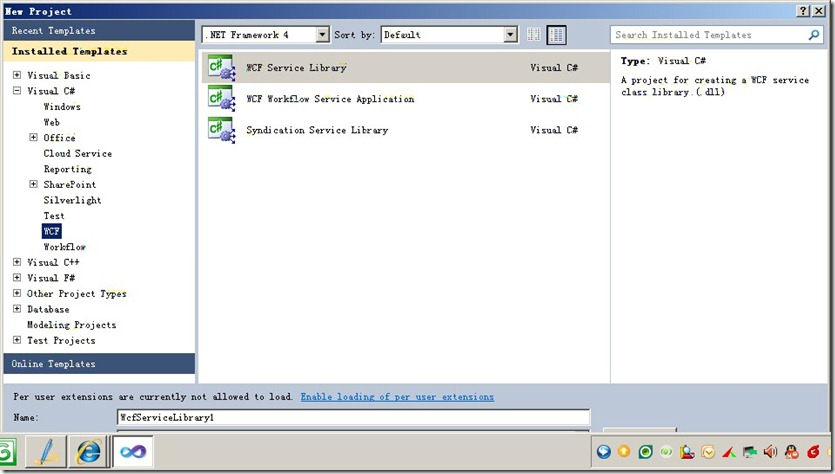
在解决方案中会自动为我们生成两个类文件“IService.cs”和“Service.cs”。
这两个类文件是两个 WCF 示例文件，对我们开发没有什么用处，现在我们删掉这两个文件。
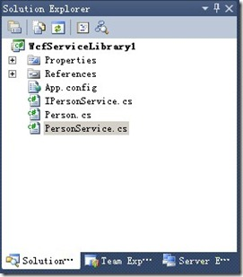
在弹出的“添加新项”窗口中，选择“类”，并在“名称”文本框中写入项名称“Person.cs”。
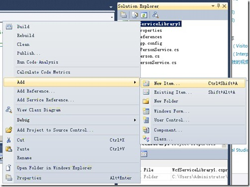
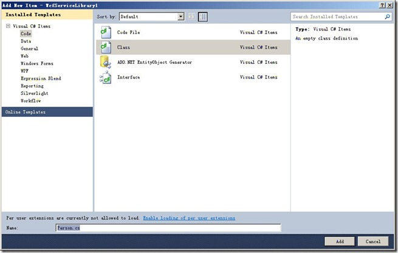
# Person.cs
using System;
using System.Collections.Generic;
using System.Linq;
using System.Text;
using System.Runtime.Serialization;
namespace WcfService
{
/*******一旦声明一个类型为DataContract，
* 那么该类型就可以被序列化在服务端和客户端之间传送
* *******/
[DataContract]
public class Person
{
[DataMember]
public string Id { get; set; }
[DataMember]
public string Name { get; set; }
[DataMember]
public string Age { get; set; }
}
}
/// DataContract 数据约定，Person 就是传递的消息中的内容。好比信中的文字。 /// 为了保证此类在 WCF 调用中能够被序列化，我们在 Book 类上面加入[DataContract]标签，在每个需要序列化的成员变量上加入[DataMember]标签。 /// 这两个标签在使用的进候需要导入 using System.Runtime.Serialization 命名空间。由于注释又出现乱码，估计是字符版本的问题，下面是用黑体复制**
创建服务接口，声明对外发布的类和方法。
# IPersonService.cs
using System.Collections.Generic;
using System.Linq;
using System.Text;
using System.ServiceModel;
namespace WcfService
{
[ServiceContract]
public interface IPersonService
{
/***在每个需要对外发布的方法上都加上[OperationContract]标签，以使外部可以访问到此方法。 ***/
/// <summary>
/// ServiceContract：服务约定，代表我们所能操作的接口集合，提供功能点。
/// 在IPersonService接口上面，我们定义了[ServiceContract]标签，此标签代表此接口及实现此接口的类都是对外发布的Service类，
/// 在每个需要对外发布的方法上都加上[OperationContract]标签，以使外部可以访问到此方法。
/// [ServiceContract]和[OperationContract]这两个标签需要导入using System.ServiceModel命名空间。
/// </summary>
[OperationContract]
void AddPerson(Person person);
[OperationContract]
List<Person> GetAllPersons();
[OperationContract]
void RemovePerson(string id);
}
}
实现我们上面声明的服务接口，实现对 Book 的添加、删除和检索的具体功能。
# PersonService.cs
using System;
using System.Collections.Generic;
using System.Linq;
using System.Text;
using System.ServiceModel;
namespace WcfService
{
/// <summary>
/// 此类是对IBookService接口的具体实现，在此类的上面我们声明了[ServiceBehavior(InstanceContextMode=InstanceContextMode.Single)]标签，
/// 此标签代表这个类采用SingleTone（单类模式）来生成对象。
/// 使用[ServiceBehavior(InstanceContextMode=InstanceContextMode.Single)]接口需要导入using System.ServiceModel;命名空间。
/// </summary>
[ServiceBehavior(InstanceContextMode = InstanceContextMode.Single)] //此类是单类模式
public class PersonService : IPersonService
{
List<Person> _Persons = new List<Person>();
public void AddPerson(Person person)
{
person.Id = Guid.NewGuid().ToString();
_Persons.Add(person);
}
public List<Person> GetAllPersons()
{
return _Persons;
}
public void RemovePerson(string id)
{
//拉姆达语句，谓词 p.Id == id
Person person = _Persons.Find(p => p.Id == id);
_Persons.Remove(person);
}
}
}
Ctrl + Shift + B 编译一下
# 二，配置服务运行
到目前为至，我们建立好了 WCF 服务，那我们如何让 WCFSVCHost(WCF 服务主机)理解我们编写的服务类，并能够运行我们编写的服务呢。这需要我们在 App.Config 里面注册一下我们的 WCF 服务。
VS 为我们提供了可视化的操作界面。 在 Services 项目中右击“App.Config”配置文件，在弹出的右键菜单中选择“编辑 WCF 配置”。
打开之后如下图
在此界面中暴露两个对外的终结点（外部可以访问到的类或接口），其中下面一个是元数据终结点，用来向外提供服务信息的终结点。
而另一个（即上面的终结点），是向外公布我们编写的[ServiceContract]的类，但我们可以看到它的 Contract 还是我们在第一步中删掉的 WcfServiceLibrary1.IService1 这个终结点。
不仅如此，在右侧上面的黑字的服务中还依旧是我们在第一步中删除的 WcfServiceLibrary1.Service1 服务。这说明虽然在第一步中我们删除了那两个自动生成的类文件，但配置文件中仍没有删除这两个类文件的配置信息。
下面我们把它们改变一下。
单击左侧的“服务”-“WcfServiceLibrary1.Service1”在右侧的 Name，弹出“服务类型浏览器”对话框，在此类型中我们找到此 WCF 服务项目编译出来的 WcfServiceLibrary1.dll 文件，双击它就可以出现此服务中的对外公布的服务，点击选中它单击确定。
这样我们就可以把对外公司的服务改变为我们刚编写的服务了。 然后，我们展开左侧“服务”->“WcfServiceLibrary1.PersonService”->“终结点”，单击第一个“空名称”，从右边的“终结点属性”中的 Contract 中我们可以看到，这里的 Contract 仍然用的是 WcfServiceLibrary1.IService1。
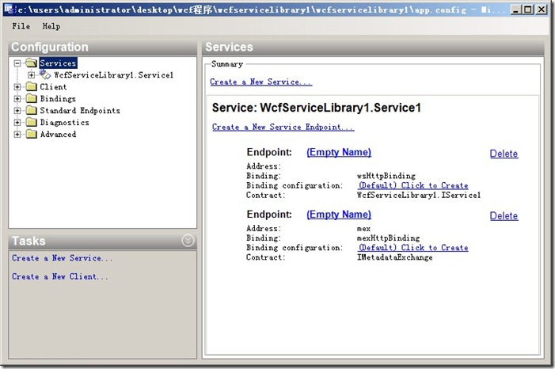
我们按照上面的做法，找到此 WCF 服务项目编译出来的 WcfServiceLibrary1.dll，双击它找到里面对应的 ServiceContract 点击确定就可以了。
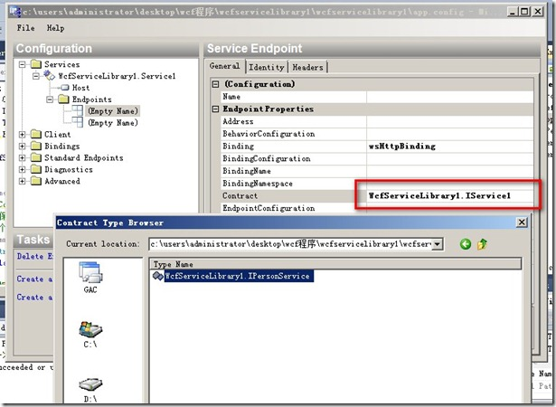
在高级目录树中，为服务行为配置命名，名字你自己决定。
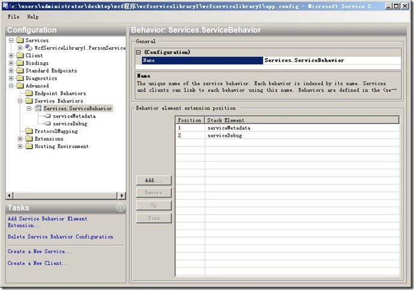
在服务中选中，刚才的行为配置。
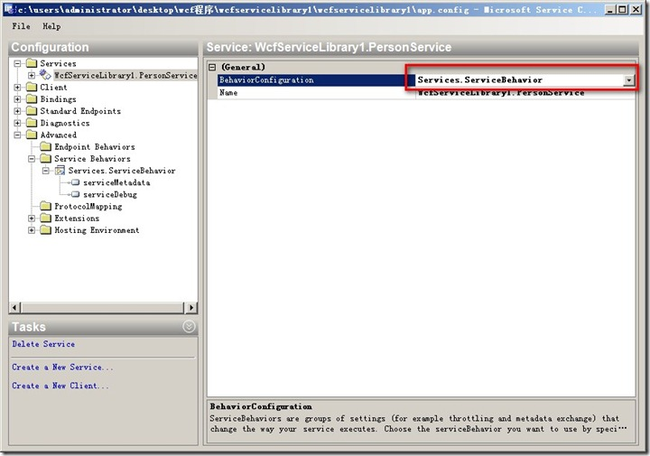
重点一定要记着保存，点击菜单“文件”-“保存”就可以把我们对 App.Config 的修改保存回配置文件了。
# App.Config
<?xml version="1.0" encoding="utf-8" ?>
<configuration>
<system.web>
<compilation debug="true" />
</system.web>
<system.serviceModel>
<services>
<service behaviorConfiguration="Services.ServiceBehavior" name="WcfServiceLibrary1.PersonService">
<endpoint address="" binding="wsHttpBinding" contract="WcfServiceLibrary1.IPersonService">
<identity>
<dns value="localhost" />
</identity>
</endpoint>
<endpoint address="mex" binding="mexHttpBinding" contract="IMetadataExchange" />
<host>
<baseAddresses>
<add baseAddress="http://localhost:8732/Design_Time_Addresses/WcfServiceLibrary1/IPersonService/" />
</baseAddresses>
</host>
</service>
</services>
<behaviors>
<serviceBehaviors>
<behavior name="Services.ServiceBehavior">
<serviceMetadata httpGetEnabled="true" />
<serviceDebug includeExceptionDetailInFaults="false" />
</behavior>
</serviceBehaviors>
</behaviors>
</system.serviceModel>
</configuration>
# 三，测试 WCF
在 Visual Studio 中为我们提供了测试 WCF 的工具，按 F5 启动 WCF 会出现两个东西 一个是在右下角的托盘图标中会出现 WCFSVCHost(WCF 服务主机)，它为我们在开发时候提供了一个运行 WCF 的服务器，用来为测试客户端提供 WCF 服务。
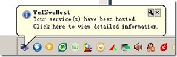
另一个是“WCF 测试客户端”
“测试客户端”从 WcfSVCHost 中取得 WCF 服务的元数据，解析为左侧的“服务结构树”，从这里面我们可以看到此 WCF 服务为我们提供了一个服务契约“IPersonService”，此服务契约中对外提供了三个可调用的方法。
点击 AddPerson() 方法 输入参数 点击 Invoke 调用
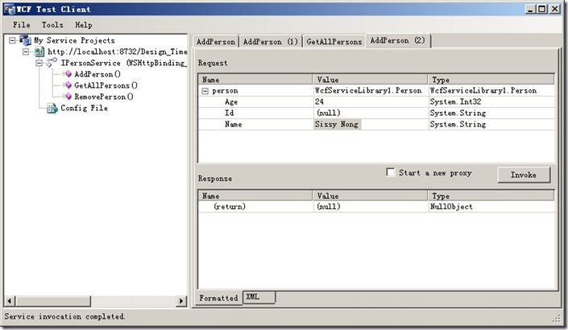
点击 GetAllPersons() ，在 Response 中我们看到了返回的结果。
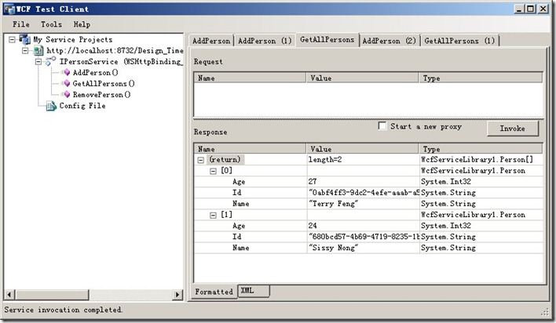
在本例中我们看到，WCF 作为面向对象和面向服务的桥梁 ，提供了非常方便的工具，无论是开发，配置还是测试，为我们可以快速的上手并提供面向服务的应用。你可以把 WCF 类库当作普通类库去做，但他提供了更强大的面向服务的特性。
WCF 的理论学习复杂程度远大于其的使用难度，而如果你是一名初学者，千万不要先陷入其复杂的理论学习中，花费很多的时间，而且看得晕头转向，最好先去实践，先去用，这样再去看 WCF 的深入概念和技术才会在大脑里面形成更好理解的印象和对应，这也是我一直在为初学者所传递的想法，不去学院派说理论，你认为呢。
源代码下载：WcfServiceLibrary1.rar
文章来源：https://www.cnblogs.com/wuhuisheng/archive/2013/01/30/2883382.html